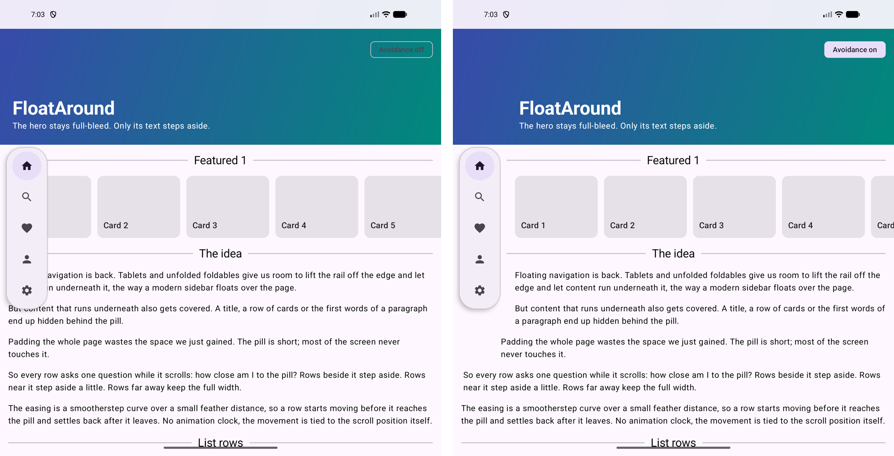

Large-screen guidance for Android recommends moving navigation from a bottom bar to a side rail once the window is wide enough [6]. Recent design languages go further and detach the rail from the edge: it floats as a rounded pill with a shadow, and the page extends behind it [3]. The visual result is lighter, but the overlay now intersects scrolling content. Titles, the first item of a horizontal carousel and the first words of every line in a paragraph can all end up underneath it.
The pill is typically short relative to the window. On an unfolded foldable in landscape, a five-item pill occupies roughly a third of the height. A page-wide start inset therefore reserves a strip of space for the whole page to solve a problem that only affects the rows currently beside the pill.
This paper describes a pattern that resolves the conflict at the level of individual elements. It is presented in the problem / forces / solution / consequences structure common in pattern literature, followed by the algorithm, related work and limitations.

A scrolling page on a window wide enough for side navigation, with a floating overlay (rail, pill, toolbar, mini-player) anchored to one horizontal edge and covering only part of the window height.
How can content remain fully visible beside the overlay without giving up the space the overlay leaves free everywhere else?
Treat the overlay as an obstacle that each element avoids individually. Every participating element reads its own bounds and the obstacle's bounds and computes a start inset: the full horizontal intrusion plus a gap when it overlaps the obstacle vertically, a smoothly eased fraction of it within a feather distance, and zero beyond. The inset is applied as layout, not as an animation, so it is always a function of the current geometry.
| Role | Behaviour | Examples |
|---|---|---|
| Shifting | Gives up its start edge; its end edge stays fixed, so content narrows and may rewrap. | Paragraphs (each paragraph separately), list rows, cards, headings |
| Compressing | Only a decorative sub-element absorbs the inset; the semantic content does not move. | The leading rule of a centred section header |
| Padding-shifting | The container keeps its full frame; the inset is added to its content padding. | Horizontal carousels: the first item steps aside, later items still scroll to the edge |
| Full-bleed | Does not participate and runs under the overlay. | Hero images and video; text placed on them is shifting |
Let the element bounds be r and the obstacle bounds o, both in a shared coordinate space, with gap g and feather f. For an obstacle on the start edge in a left-to-right layout:
intrusion = o.right + g - r.left (RTL: r.right - o.left + g) if intrusion <= 0 return 0 // already clear horizontally d = max(o.top - r.bottom, r.top - o.bottom, 0) // vertical gap, 0 when overlapping if d == 0 return intrusion if d >= f return 0 t = 1 - d / f return intrusion * t³ (6t² - 15t + 10) // smootherstep [5]
Smootherstep has zero first and second derivatives at both ends, so an element starts and stops moving without a visible kink in velocity or acceleration. With f = 0 the function degrades to a hard step: overlapping elements step aside, all others do not. In the reference implementation g = 12dp and f = 140dp.
The function has no state and no time parameter. This is the key difference from an animated transition: there is nothing to start, cancel or interrupt, and the result for a given scroll position is always the same.
FloatAround implements the pattern for Jetpack Compose. The overlay publishes its bounds with Modifier.floatingObstacle. Shifting and compressing elements use Modifier.avoid, a layout modifier node that observes its own global position and reads the inset during the measure pass; it measures its child with reduced width and places it at the inset. Since the inset is read in the layout phase, a change re-lays out only the affected elements and triggers no recomposition. Padding-shifting containers use a tracker that observes the container position and a PaddingValues implementation that adds the inset on the start side. The pure function is exposed separately for ports to other toolkits.
val obstacle = remember { FloatingObstacle(gap = 12.dp, feather = 140.dp) }
Pill(Modifier.align(Alignment.CenterStart).floatingObstacle(obstacle))
Text(paragraph, Modifier.avoid(obstacle))
HorizontalDivider(Modifier.weight(1f).avoid(obstacle))
LazyRow(Modifier.track(tracker), contentPadding = base.plusAvoidance(tracker, density))
Text exclusion paths. Apple's TextKit lets a text container exclude arbitrary paths so that lines flow around them [1], and CSS Shapes lets inline content wrap around a float's shape [2]. These are the closest conceptual relatives: per-line avoidance of an obstacle. They operate on lines of text inside a single text container and are evaluated once per layout, not per element across a scrolling page.
Background extension. iPadOS 26 floats the sidebar and lets content extend beneath it, mirroring and blurring the content into the covered area so that it appears continuous [3][4]. This preserves full-bleed imagery, which corresponds to the full-bleed role here, but does not move interactive or textual content out from under the overlay.
Window insets and rulers. Android reports system bars, cutouts and the IME as window insets, and Compose's WindowInsetsRulers with Modifier.fitInside lets a layout fit within such regions, including custom ones [7]. The documentation cautions against using them inside scroll containers; insets are designed for page-level safe areas rather than for elements whose distance to a region changes every frame.
Collapsing and scroll-aware bars. Material's scroll behaviours hide or collapse app bars in response to scrolling [6]. They move the overlay out of the way; exclusion zones move the content instead and keep the navigation visible.
Floating overlays turn navigation into an obstacle inside the content area. Treating that obstacle the way typography treats a figure, as something each line or element flows around, keeps content visible without giving up the space floating navigation was meant to create. Defining the inset as a pure, eased function of geometry rather than as an animation makes the behaviour stable across scrolling, folding and resizing, and keeps the implementation small.